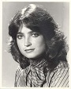
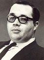

Let's focus on the real issue - news as entertainment
May 11, 2013
Patricia Edgar
Jana Wendt.
Geoffrey Barker was on to something when he wrote in these pages about women in commercial television news (''Switch off the TV babes for some real news'', Comment, May 2). But his focus on pert breasts and lack of talent obscured the main issue, which is the trivialisation of serious news.
It is fair to say the commercial networks won't be conducting any blind auditions for news presenters, because looks do indeed matter.
One of the appealing attributes of the highly successful program The Voice is that while all candidates have creditable voices the judges have no idea what they are getting for their team until they turn to look. And sometimes, try as they might, you can see the shock register for a split second on a judge's face.
Laurie Oakes.
A singer can be old, young, overweight, gawky or plain, but they all have some talent that got them on stage in the first place and they represent the extraordinary range of humanity to which we all belong.
Not so for female news presenters on commercial television. They are ''of a type'' - but this does not mean they lack talent. On the contrary they must be smart, hard-working, ambitious, tough and resilient. But it is no doubt also true that they spend quite a lot of time with their hairdryers and have eaten more than a few lettuce leaves, because television is a visual medium and ''the talent'' is required to be visually pleasing as well as believable at some level.
I have sat on many an interview panel where we went through a process fairly and objectively, but the way a person looked played a major part in judgment from the moment a candidate entered the room.
In advising a young person on a career, no matter how promising their journalistic skills, I would not suggest trying out for news presenter if their eyes are too close together, they have buck teeth, are obese or, if a male, are going bald and have a heavy 5 o'clock shadow.
There is nothing new in this. Until International Women's Year in 1975, when women demanded roles in boardrooms and organisations where they had never been welcome, commercial television news had been a male domain. The glass ceiling shattered when Barbara Walters skyrocketed to prominence, hired by the US ABC network to co-anchor the evening News. She was to be paid $1 million a year, an obscene amount of money, particularly when the country's leading newsman Walter Cronkite was earning $400,000.
Time dubbed Walters 'the million-dollar babe', the most influential woman in television. Cronkite regularly sniped at Walters for diluting real news with 'People magazine-style entertainment gossip'. He privately derided her contribution as 'happy talk'. But the evening News programs were changing in the late '70s and the decision to employ Walters and make her a star was inspired. Entertainment was the key.
Walters had never been a journalist; she had worked as a writer and researcher demonstrating exceptional talent and a strong work ethic. She proved to be an outstanding interviewer who studied her subject thoroughly and was aggressively tenacious in pursuit of a story. She sometimes trumped Cronkite in interviews with political leaders. And she was a very good.
Undoubtedly influenced by Walters' success, Channel Ten hired the lovely Jana Wendt as a reporter in 1979. Wendt moved to Channel Nine in 1982 and became 60 Minutes' youngest and first female reporter. Like Walters she had a tough interviewing ability, which earned her the nickname the 'Perfumed Steamroller'. Walters and Wendt were broadcasting pioneers and their success led to many more women making inroads into the tough business of broadcast journalism.
Let's not fool ourselves: commercial TV is a very competitive business and despite any notion networks may claim of informing the public, above all they aim to attract audiences and sell advertising. A news program is a production that first must measure up to these criteria, so news has become an entertainment program before anything else.
A producer of a commercial news show can't defy TV's requirements. He must try to make celebrities of his newscasters, bring on a weather reporter for glamour or maybe comic relief and a sportscaster who looks in touch with the 'common people'. There will be a music sting, perhaps a jingle. The whole event is a packaged half-hour of entertainment.
So a presenter's appearance and way of speaking is important while they report on earthquakes, mass killings and other disasters with apparent bland enthusiasm. They know, no matter how grave the fragment of news, it will soon be followed by a series of commercials. A newscaster could report that a nuclear war is inevitable and go on to say that she will be right back after a word from KFC. We really do not fully understand what such juxtapositions are doing to our understanding of the complexities of the world we live in.
And Laurie Oakes and Michelle Grattan notwithstanding, a producer will choose a presenter who can do their job while being easy on the eye. How well such news programs inform our democratic process is another story.
Patricia Edgar is a media sociologist. Her latest book, In Praise of Ageing, will be published by Text in October.